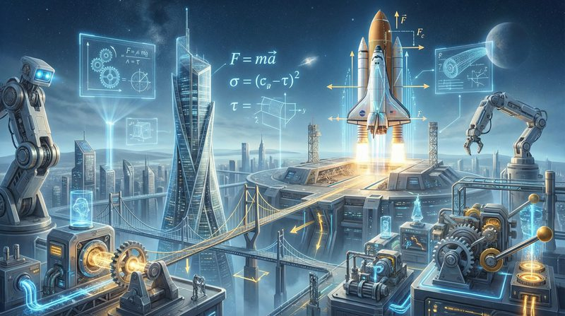

返回课程列表
第六课
振动基础
灾难片的振动模拟与音效设计
⏱️ 约35分钟
地震、海啸、火山爆发——灾难片的震撼效果离不开振动的精确模拟。而电影音效的低频轰鸣也是振动学的应用。
地震的振动模拟
地震波分为P波（纵波）和S波（横波），传播速度和破坏方式不同。灾难片中的地震场景需要精确模拟这两种波的叠加效果。

地震灾难片的物理基础
地震场景的振动学原理：
- P波先到：纵波速度约6km/s，先到达地表产生上下颠簸
- S波后到：横波速度约3.5km/s，产生水平摇晃，破坏力更大
- 共振破坏：建筑固有频率与地震波频率接近时破坏最严重
- 液化效应：地震振动使饱和砂土液化，建筑物整体下沉
电影音效的振动设计
电影院的低频音效（次声波）能让观众产生身体共振，增强沉浸感。THX标准要求影院能重现20Hz-20kHz的完整频率范围。
影院音效的振动学
电影声音设计中的振动原理：
- 次声波效果：低于20Hz的声波人耳听不到，但身体能感受到振动
- IMAX音响：12声道环绕声系统，低频可达5Hz，产生强烈体感
- 威廉之吼：电影史上最著名的音效，经过精心的频率设计
- 杜比全景声：天花板扬声器创造三维声场，声音可以在头顶移动